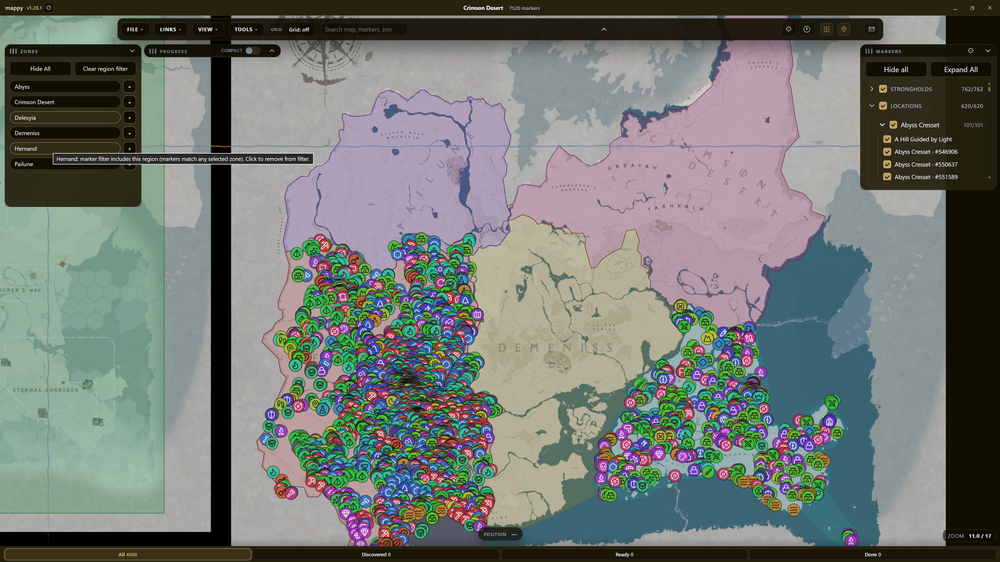
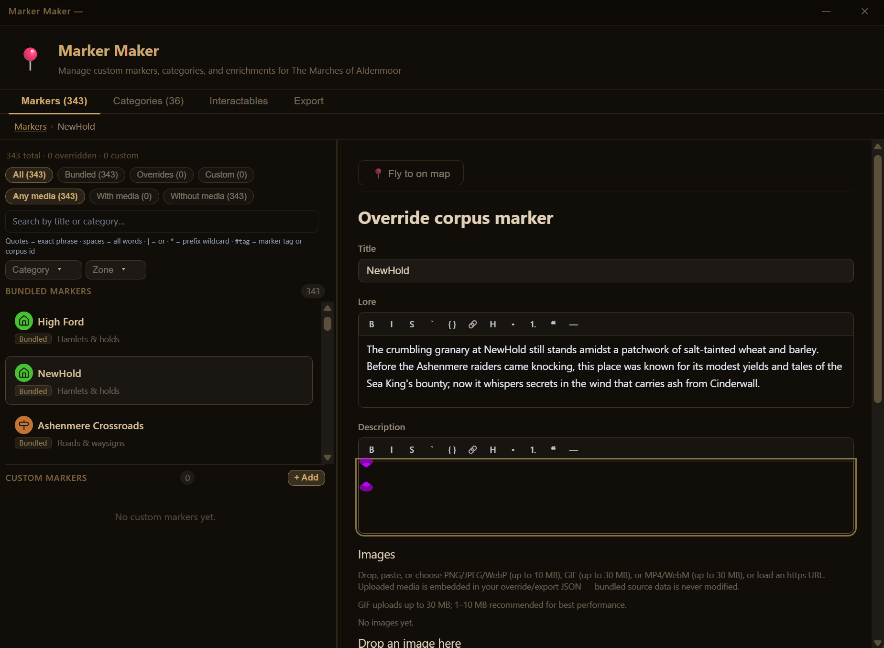
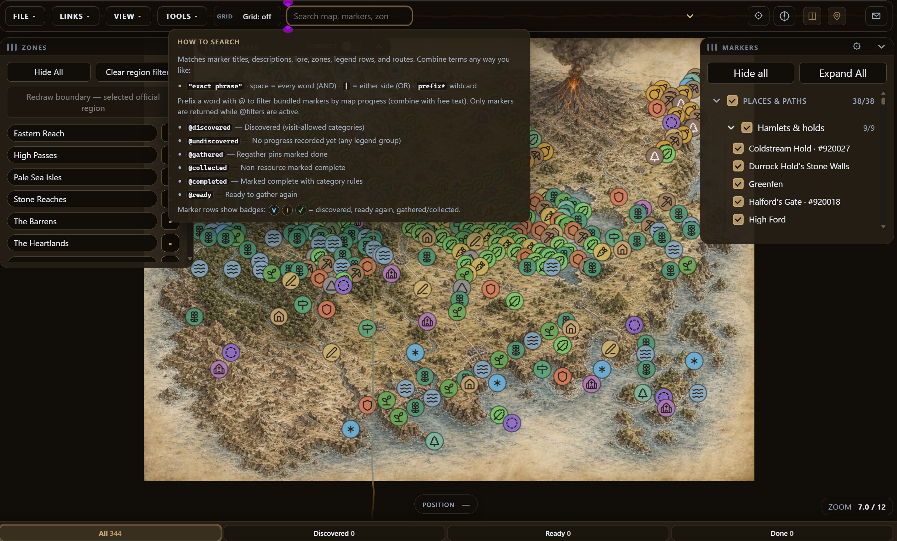

Explore
Pan a living MapLibre canvas — categories, regions, lore hover cards , unified search, and progress filters. Everything loads locally after the first fetch.
Offline-first · Windows · No account · No telemetry
I'm Rowan at the guild door — and mappy is the cartographer's table for open-world games, homebrew campaigns, and realms you drew yourself. MapLibre canvas, marker corpus, unified search, progress tracking, measure tools, territories, Whiteboard pins, Marker Maker, Tile Studio, and Official Map Packs — static files on your machine, not our servers.
The installer ships a demo realm so you can learn every instrument before downloading a full game world. Updates arrive through the in-app updater . o(≧▽≦)o
A look at the table
Explore, author, and search from one cartographer's table.



Pan a living MapLibre canvas — categories, regions, lore hover cards , unified search, and progress filters. Everything loads locally after the first fetch.
Draw paths and territories, place landmarks and whiteboard pins, run Marker Maker and Tile Studio, then export .mappy or .mappymap bundles you control.
No account. No product analytics Progress, drawings, shortcuts, and HUD layout stay on your PC — we do not host your atlas.
84 instruments in 15 chapters — pick a chapter, search by name, or expand one drawer at a time.
8 high-impact instruments — full game worlds, unified search, marker media, drawn routes, homebrew map images, session scratch pins, and a portable . mappy vault on your PC.
Full game worlds download inside the app — e.g. free Crimson Desert — not stuffed into the installer.
One search field for markers, lore, zones, routes, scratch pins, and landmarks.
Hang screenshots, reference art, or field photos on markers you author — not just text lore.
Draw on marker photos with pen and eraser — circles, arrows, session notes — and save annotations with the image on your PC.
Sketch persistent roads and routes; read segment and total length.
Import Wonderdraft exports, Photoshop slices, or photos of hand-drawn maps.
scratch pins stored only locally, drawn above official bundle pins.
Save progress, drawings, and layout to a .mappy file you control.
The full grimoire
No instruments matched. Try fewer words, media | attach, or a prefix like annot*.
Setup, demo realm, Official Map Packs, and the updater — the guild door before your first expedition.
Headline instrument
Signed in-app updater on Windows keeps mappy current without hunting downloads.
The installer includes a white-label demo world so you can learn every instrument before downloading a full game map.
Full game worlds download inside the app — e.g. free Crimson Desert — not stuffed into the installer.
No subscription. The app is free; contact copy clarifies software vs game data licensing.
Hunt by name, lore quote, or landmark — one search field for the whole atlas.
Headline instrument
Story text stored in marker lore fields matches search — not just titles.
Full panel with lore, description, media gallery, and provenance when shipped.
Draw on marker photos with pen and eraser — circles, arrows, session notes — and save annotations with the image on your PC.
Hang screenshots, reference art, or field photos on markers you author — not just text lore.
Hover a marker for title plus formatted lore preview on the map.
Dialogs to jump to coordinates or pick many items at once.
Tick caves, herbs, and bosses; filter what is left like a proper quest board.
Headline instrument
Map halos and checklist stay aligned when you mark progress.
Show visited, gathered, or ready-to-regather modes on the canvas.
Completion verbs match the world — cleared vs gathered vs found.
Table of completions with phase filters, search, and category chips.
Resource pins can show cooldown until they can be gathered again.
Browse and filter completion state across categories.
Rulers, paths, and routes for meeting friends or planning a march.
Headline instrument
Sketch persistent roads and routes; read segment and total length.
While sketching, undo mistaken vertices before you commit the path.
Measure along saved paths; falls back to straight line when roads do not connect.
Toolbar layout that foregrounds drawing tools over pure exploration.
Paint regions and zones — who holds which slice of the map.
Headline instrument
Redraw a client-side outline for an official region without changing bundle ids.
Toggle individual zone polygons on or off on the map.
scratch pins and scene notes that stay on your machine, not ours.
Headline instrument
List, edit, fly-to, and delete scratch pins.
Stretch battlemap images (SVG, PNG, JPEG, WebP) over the viewport.
Bundled CC0 grid and sketch presets for quick battlemap alignment.
Toggle scene layer UI from View menu on supported profiles.
Author categories, icons, and lore — then export a bundle you own.
Headline instrument
User categories merge with official data without corrupting the pack.
Share marker changes or merged bundles with your party.
Breadcrumbs and deep edit UI inside the workshop.
Bake tiles for custom profiles; same static-file discipline as everything else.
Headline instrument
Custom raster map becomes a selectable profile like official worlds.
Docks, shortcuts, and layout prefs that remember how you like the table set.
Headline instrument
Show or hide docks and marker detail panel.
Collapse to a slim title strip without removing the dock.
Dock positions and collapse state save per profile locally.
Confirm or reset when moving user-placed markers.
Respawn timers, keyboard shortcuts, unified dialog host.
Reach the team from inside the app.
File, Chart, Links, View, Tools — full desktop menubar.
Right-click the map for placement and landmark actions.
Per-pin options from the map or list.
Language, keys, and menus — make the app speak your tongue.
Headline instrument
Rebind File menu actions; save overrides locally on desktop.
Immediate feedback if a chord is already bound.
Eleven UI languages plus per-pack world tongues when publishers ship them.
Headline instrument
Native labels in the dropdown: English, Español, 简体中文, Français, Deutsch, 日本語, Português, Русский, 한국어, Italiano, العربية.
العربية mirrors the layout — menus and docks flow right-to-left while map navigation stays familiar.
Official Map Packs may ship translated marker titles and lore alongside the base language.
No account, no telemetry — your vault stays on the PC you trust.
Headline instrument
No login — we do not host your map state.
No analytics SDK in the application code.
Lore renders without raw HTML injection.
Sharing under your control when you export encrypted bundles.
Enrichment sources shown in marker detail when provided.
Shipping Windows builds include modest hardening against casual devtools access — a guardrail for players, not a lock on your files.
mappy is free for you to use. Official Map Pack world data belongs to its publishers — the app is the table you set the map on.
.mappy when you want a copy elsewhere.
Download the Windows installer, explore the demo realm, then open File → Official maps when you are ready for a full world.
Download mappyI don't keep a copy — only you hold the atlas. ( ^_^)/